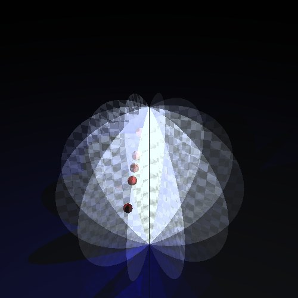
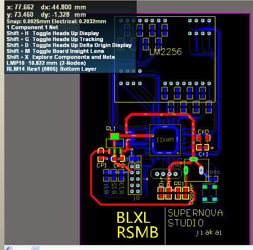
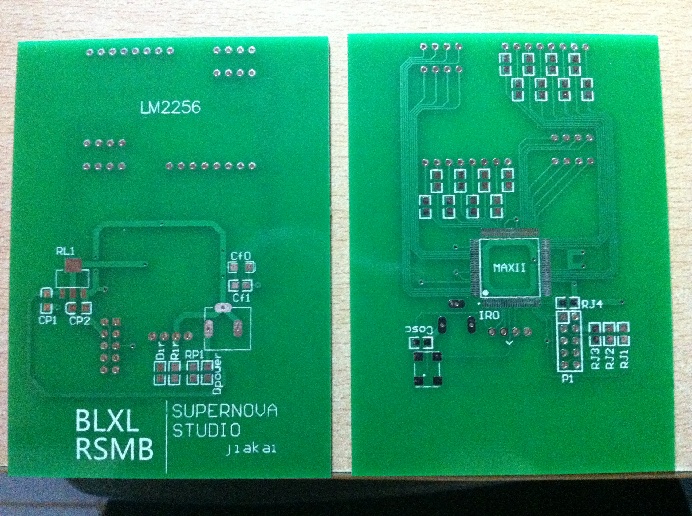
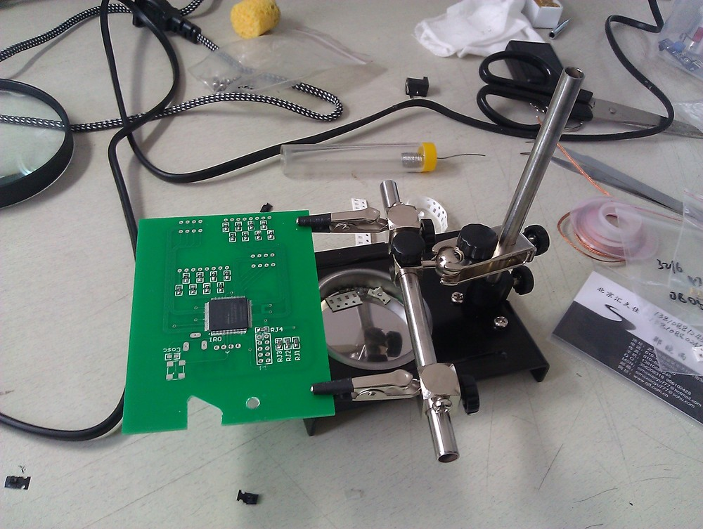
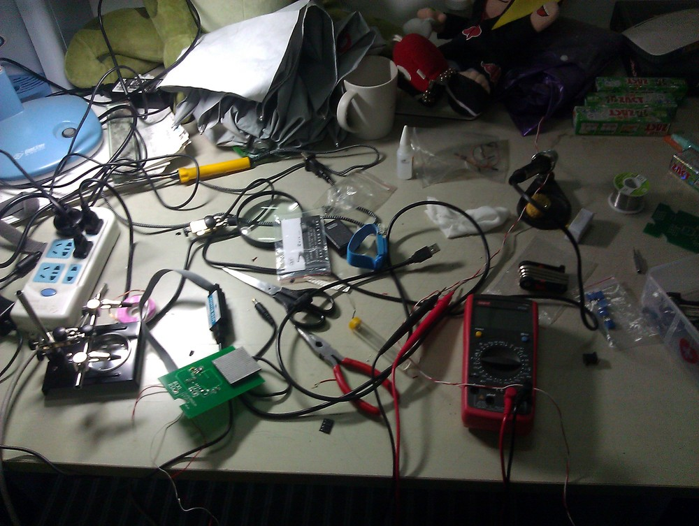

菠萝香辣肉松面包
(BLXL Rousong Bread)
--3D显示设备
计14 贾开 吴育昕
通过旋转彩灯电路板,在不同的角度点亮特定彩灯,实现3D效果
概念图
使用AltiumDesigner软件设计电路板

焊接电路板
板上装有CPLD(EPM570),灯阵(16x16),传感器,电池等

传感器检测速度
- 利用最近两次信号的间隔计算速度,配合时钟计算当前位置
- 实现一个更节省逻辑单元的简单除法器
- 可通过移动手持发射器改变图形位置,控制其旋转
软件生成点阵数据
- 枚举每一帧的每个像素
- 计算像素在这一帧内的空间轨迹(要考虑旋转时的偏心距)
- 若轨迹与目标图形的距离小于某一阈值,则应点亮
- 将亮点的位置表示为0-255的整数输出
UFM数据存储(1KiB)
使用了120帧数据
只将每个矩阵中的亮点存入UFM中
每帧存储8bit地址，并将最高位为1的帧编号直接写入CFM